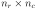
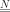
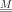
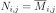
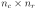
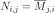
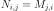

ComplexMatrix¶
-
class
ComplexMatrix(*args)¶ Complex Matrix.
- Available constructors:
ComplexMatrix(nr, nc)
ComplexMatrix(nr, nc, values)
Parameters: nr : integer
The number of rows of the complex matrix.
nc : integer
The number of columns of the complex matrix.
values : sequence of complex number
The sequence must have  elements. It might be a
ComplexCollectionor aScalarCollection. Default is (0, 0).See also
Examples
>>> import openturns as ot >>> m = ot.ComplexMatrix(2, 2, [1+2j, 3+4j , 5+6j, 7+8j]) >>> print(m) [[ (1,2) (5,6) ] [ (3,4) (7,8) ]] >>> m = ot.ComplexMatrix(2, 3, range(2*3)) >>> print(m) [[ (0,0) (2,0) (4,0) ] [ (1,0) (3,0) (5,0) ]]
Create a matrix from a numpy array:
>>> import numpy as np >>> array = np.array([[1, 2], [3, 4], [5, 6]]) >>> m = ot.ComplexMatrix(array) >>> print(m) [[ (1,0) (2,0) ] [ (3,0) (4,0) ] [ (5,0) (6,0) ]]
Methods
clean(threshold)Clean the matrix according to a specific threshold. conjugate()Accessor to the conjugate complex matrix. conjugateTranspose()Accessor to the transposed conjugate complex matrix. getClassName()Accessor to the object’s name. getId()Accessor to the object’s id. getImplementation(*args)Accessor to the underlying implementation. getName()Accessor to the object’s name. getNbColumns()Accessor to the number of columns. getNbRows()Accessor to the number of rows. imag()Accessor to the imaginary part. isEmpty()Test whether the matrix is empty or not. real()Accessor to the real part. setName(name)Accessor to the object’s name. solveLinearSystem(*args)transpose()Accessor to the transposed complex matrix. -
__init__(*args)¶ x.__init__(…) initializes x; see help(type(x)) for signature
-
clean(threshold)¶ Clean the matrix according to a specific threshold.
Parameters: threshold : positive float
Numerical sample which is the collection of points stored by the history strategy.
-
conjugate()¶ Accessor to the conjugate complex matrix.
Returns: N :
ComplexMatrixThe conjugate matrix  of size associated with the given complex matrix  such as .
-
conjugateTranspose()¶ Accessor to the transposed conjugate complex matrix.
Returns: N :
ComplexMatrixThe transposed conjugate matrix of size  associated with the given complex matrix such as .
-
getClassName()¶ Accessor to the object’s name.
Returns: class_name : str
The object class name (object.__class__.__name__).
-
getId()¶ Accessor to the object’s id.
Returns: id : int
Internal unique identifier.
-
getImplementation(*args)¶ Accessor to the underlying implementation.
Returns: impl : Implementation
The implementation class.
-
getName()¶ Accessor to the object’s name.
Returns: name : str
The name of the object.
-
getNbColumns()¶ Accessor to the number of columns.
Returns: nc : integer
The number of columns of .
-
getNbRows()¶ Accessor to the number of rows.
Returns: nr : integer
The number of rows of .
-
isEmpty()¶ Test whether the matrix is empty or not.
Returns: isEmpty : bool
Flag telling whether the dimensions of the matrix is zero.
-
setName(name)¶ Accessor to the object’s name.
Parameters: name : str
The name of the object.
-
transpose()¶ Accessor to the transposed complex matrix.
Returns: N :
ComplexMatrixThe transposed matrix of size associated with the given complex matrix such as .